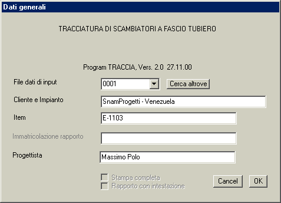

Alla pressione del pulsante della finestra principale appare la finestra per la selezione/creazione del progetto in corso e per l'imputazione dei dati generali:

Il nome del file di dati rappresentanti l'input per il progetto deve essere una stringa di quattro caratteri alfanumerici, e avrà l'estensione .INP.
Nel caso di esecuzione in modalità autonoma tale file risiederà normalmente nella directory 'Programmi\Lancio\Dati'. Nel caso di esecuzione ancillare il file di dati risiederà nella sottodirectory relativa al progetto in questione, situata nella directory 'Programmi\Lancio\Work'.